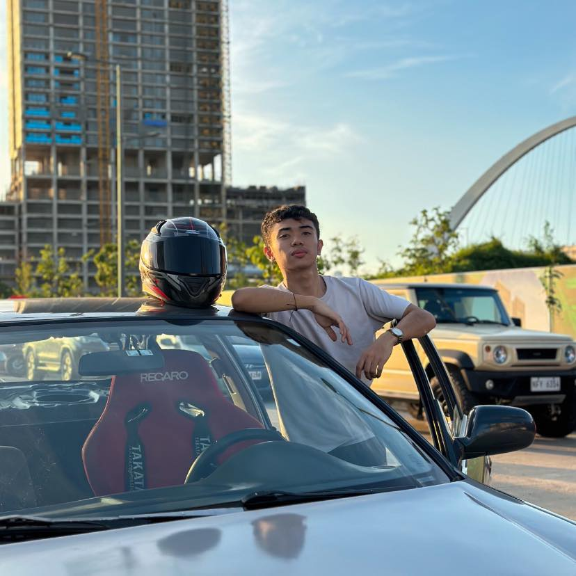

Meet the Videographer
Randz Delos Reyes, a passionate Multimedia Arts student from Muntinlupa, has been honing his skills in videography, creating captivating visual stories. With his background in video production and editing, Randz brings a fresh perspective to every project, whether it's an event, documentary, or commercial video.
Randz is committed to capturing moments that are cinematic, artistic, and memorable. His work reflects his creativity and dedication to his craft, earning him recognition in several student film festivals. Through his lens, Randz aims to tell stories that evoke emotions and inspire his audience.